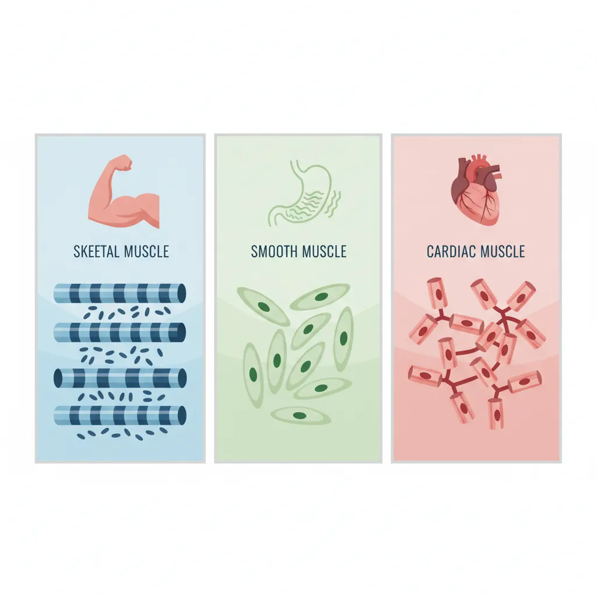
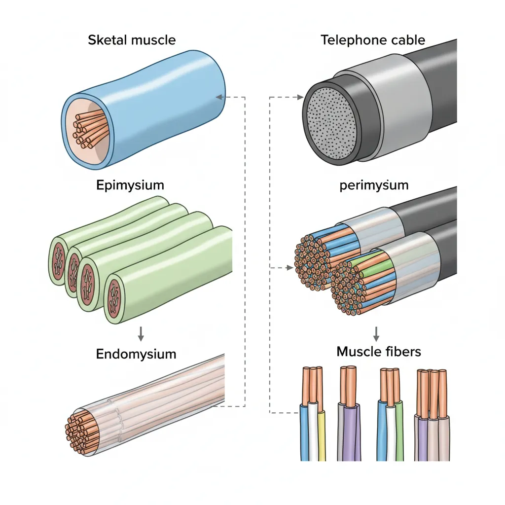
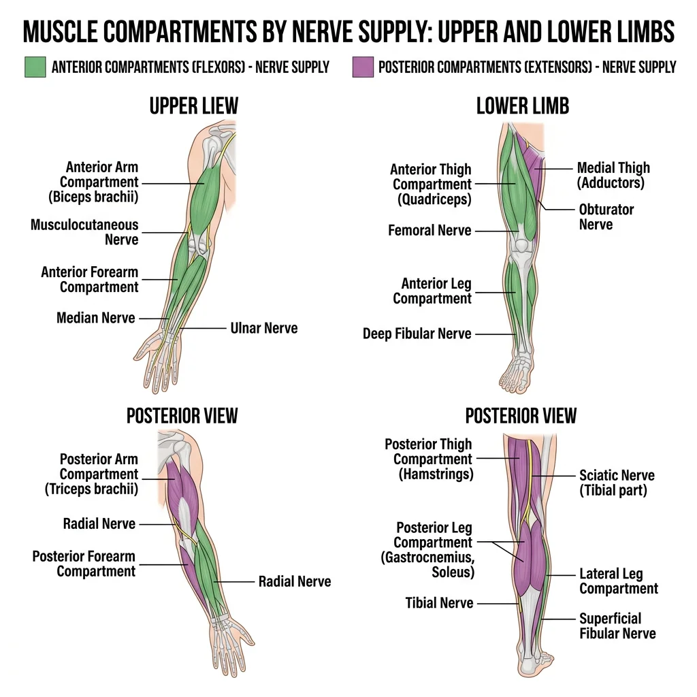
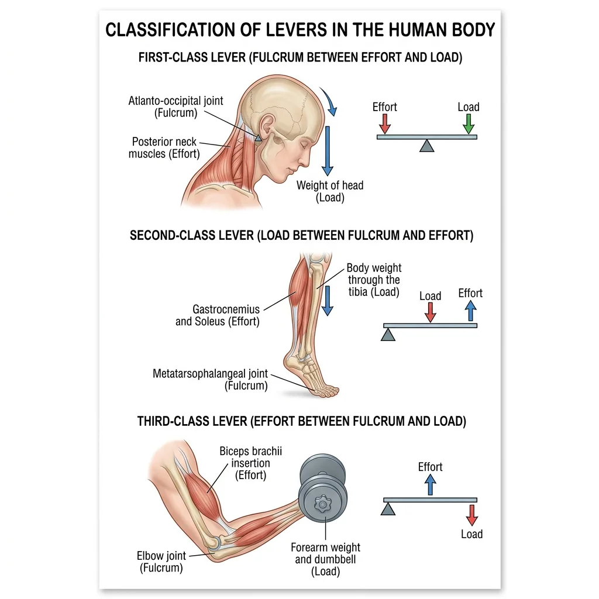
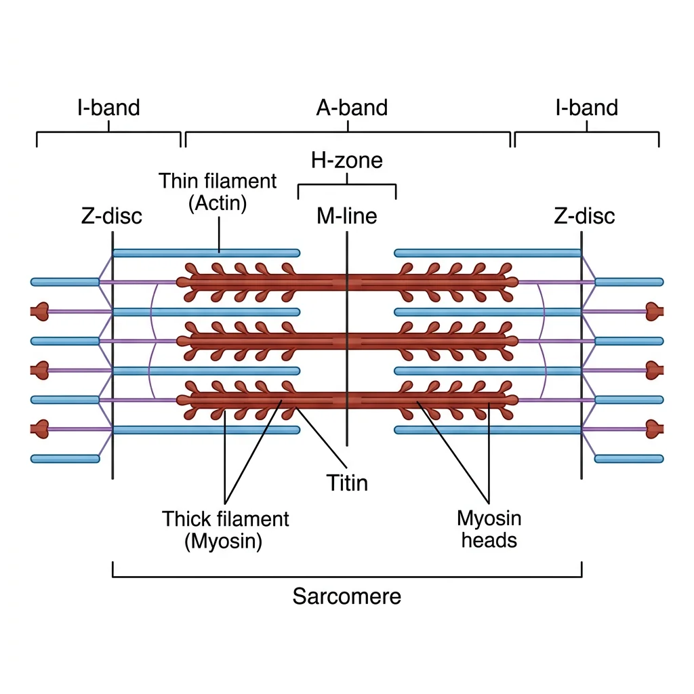

Human Anatomy Mastery
Anatomical Terminology & Body Planes
Directional terms, planes, cavities, tissuesSkeletal System & Joints
Osteology, axial & appendicular, arthrologyMuscular System & Movement
Muscle types, functional groups, biomechanicsCardiovascular & Lymphatic Anatomy
Heart, vessels, lymphatics, clinical linksNervous System & Neuroanatomy
CNS, PNS, autonomic, functional pathwaysVisceral Anatomy — Thorax & Abdomen
Thoracic & abdominal organs, peritoneumHead, Neck & Special Senses
Skull foramina, eye, ear, oral anatomySurface Anatomy & Clinical Imaging
Landmarks, X-ray, CT, MRI, proceduresHistology & Microscopic Anatomy
Cell ultrastructure, tissue & organ histologyEmbryology & Developmental Anatomy
Germ layers, organogenesis, malformationsFunctional & Applied Anatomy
Biomechanics, posture, gait, integrationRegional Dissection Mastery
Upper/lower limb, thorax, abdomen, pelvisMuscle Types
The human body contains approximately 700 named skeletal muscles, accounting for roughly 40–45 % of total body mass in males and ~36 % in females. All muscle tissue shares the fundamental property of contractility — the ability to generate force by converting chemical energy (ATP) into mechanical work. However, the body contains three distinct types of muscle, each adapted to different functional demands.

Skeletal Muscle
Skeletal muscle attaches to bones (and occasionally skin or other muscles) and is responsible for all voluntary movement, maintenance of posture, joint stabilisation, and heat generation (~85 % of body heat during exercise). Its fibres are long, cylindrical, multinucleated cells with a characteristic striated (banded) appearance under microscopy, reflecting the precise arrangement of actin and myosin myofilaments into sarcomeres.
| Feature | Skeletal Muscle | Smooth Muscle | Cardiac Muscle |
|---|---|---|---|
| Location | Attached to skeleton, tongue, diaphragm, upper oesophagus | Walls of hollow viscera, blood vessels, airways, iris, arrector pili | Heart wall (myocardium) only |
| Appearance | Striated (banded) | Non-striated (smooth) | Striated (banded) |
| Cell Shape | Long cylindrical fibres (up to 30 cm — sartorius) | Short, spindle-shaped (fusiform), 20–500 µm | Short, branching cells, 50–100 µm |
| Nuclei | Multinucleated (peripheral, subsarcolemmal) | Single central nucleus | 1–2 central nuclei |
| Control | Voluntary (somatic motor neurons) | Involuntary (autonomic NS, hormones, local factors) | Involuntary (autorhythmic, modulated by ANS) |
| Contraction Speed | Fast to slow (fibre-type dependent) | Slow, sustained (tonic) | Moderate, rhythmic |
| Regeneration | Limited (satellite cells) | Moderate (can divide) | Very limited (replaced by scar tissue) |
| Special Features | Motor units, neuromuscular junction | Gap junctions (single-unit), varicosities | Intercalated discs (desmosomes + gap junctions) |
Smooth Muscle
Smooth muscle forms the walls of hollow organs and tubes — the gastrointestinal tract, urinary bladder, uterus, blood vessels, and airways. It lacks visible striations because its actin and myosin filaments are arranged in a criss-crossing lattice rather than in ordered sarcomeres. Two functional types exist:
- Single-unit (visceral) smooth muscle: Cells connected by gap junctions contract as a coordinated sheet. Found in the GI tract, uterus, and ureters. Can exhibit spontaneous rhythmic contractions (myogenic activity).
- Multi-unit smooth muscle: Each fibre functions independently, innervated by its own nerve ending. Found in the iris (pupillary muscles), ciliary body, arrector pili, and large airways. Allows fine, graded control.
Cardiac Muscle
Cardiac muscle is found exclusively in the heart wall (myocardium). Like skeletal muscle, it is striated; like smooth muscle, it is involuntary. Its defining structural feature is the intercalated disc — a specialised cell junction where adjacent cardiomyocytes interdigitate. Intercalated discs contain desmosomes (mechanical anchoring — prevent cells from pulling apart during contraction) and gap junctions (electrical coupling — allow rapid propagation of action potentials so the heart contracts as a functional syncytium).
Skeletal Muscle Anatomy
Each skeletal muscle is an organ containing muscle fibres, connective tissue sheaths, blood vessels, and nerves. The connective tissue framework organises fibres into functional units and transmits the force of contraction to tendons and bones:

- Endomysium: Thin areolar tissue wrapping each individual muscle fibre
- Perimysium: Denser connective tissue bundling 10–100 fibres into a fascicle
- Epimysium: Tough fibrous sheath encasing the entire muscle
- Deep fascia: Dense connective tissue investing groups of muscles (e.g., fascia lata of the thigh)
Analogy: Think of a telephone cable — individual copper wires (fibres) are wrapped in plastic (endomysium), bundled into groups (fascicles/perimysium), and the whole cable is enclosed in an outer sheath (epimysium).
Origin, Insertion & Action
Every skeletal muscle has at least two attachment points connected by a fleshy belly:
- Origin: The more fixed (proximal or axial) attachment — usually closer to the midline or on the more stationary bone. Many muscles have multiple heads of origin (e.g., biceps = 2, triceps = 3, quadriceps = 4).
- Insertion: The more movable (distal or appendicular) attachment — the bone that moves when the muscle contracts.
- Action: The movement produced when the muscle contracts (e.g., flexion, extension, abduction). Most muscles have a primary action and one or more secondary actions.
Muscles attach to bones via tendons (cord-like — e.g., biceps tendon) or aponeuroses (flat sheet-like — e.g., palmar aponeurosis, linea alba). Some muscles attach directly to bone via fleshy fibres (e.g., rhomboids).
Muscle Naming Conventions
| Naming Basis | Pattern | Examples |
|---|---|---|
| Shape | Resemblance to geometric forms | Deltoid (triangle), trapezius (trapezoid), rhomboid, piriformis (pear-shaped) |
| Size | Relative to neighbours | Gluteus maximus/medius/minimus, adductor longus/brevis/magnus |
| Location | Body region or bone | Tibialis anterior, frontalis, brachialis, intercostals |
| Number of Origins | Heads (ceps) count | Biceps (2), triceps (3), quadriceps (4) |
| Direction of Fibres | Orientation relative to midline | Rectus (straight/parallel), oblique (diagonal), transversus (horizontal) |
| Action | Primary movement | Flexor, extensor, abductor, adductor, pronator, supinator, levator |
| Origin & Insertion | Attachment sites named | Sternocleidomastoid (sternum + clavicle → mastoid), brachioradialis |
Innervation — Motor Units
Every skeletal muscle fibre is innervated by a single α-motor neuron at the neuromuscular junction (NMJ), also called the motor end plate. The combination of one motor neuron and all the muscle fibres it innervates is a motor unit — the smallest functional unit of motor control.
At the NMJ, the motor neuron terminal releases acetylcholine (ACh) into the synaptic cleft. ACh binds nicotinic receptors on the sarcolemma (muscle cell membrane), triggering depolarisation that propagates along the fibre and into the T-tubules, initiating calcium release and contraction.
Blood Supply
Skeletal muscle is richly vascularised, reflecting its high metabolic demand — at rest, skeletal muscle receives ~20 % of cardiac output; during maximal exercise, this increases to ~80 %. Each muscle fibre is served by a capillary network running parallel to it. Arterial supply typically enters the muscle belly via one or more nutrient arteries that branch into arterioles within the perimysium and capillaries within the endomysium.
Functional Muscle Groups
Clinically and functionally, muscles of the limbs are organised into compartments — groups of muscles enclosed by deep fascia and separated by intermuscular septa. Each compartment shares a common nerve supply and, generally, a common action.

Compartments of the Limbs
Upper Limb
| Region | Compartment | Key Muscles | Primary Action | Nerve |
|---|---|---|---|---|
| Arm | Anterior | Biceps brachii, brachialis, coracobrachialis | Flexion at elbow | Musculocutaneous (C5–C7) |
| Posterior | Triceps brachii, anconeus | Extension at elbow | Radial (C5–T1) | |
| Forearm | Anterior | Superficial: pronator teres, FCR, palmaris longus, FCU, FDS. Deep: FDP, FPL, pronator quadratus | Wrist/finger flexion, pronation | Median (most), ulnar (FCU, medial FDP) |
| Posterior | Superficial: brachioradialis, ECRL, ECRB, ED, EDM, ECU. Deep: supinator, APL, EPB, EPL, EI | Wrist/finger extension, supination | Radial / posterior interosseous |
Lower Limb
| Region | Compartment | Key Muscles | Primary Action | Nerve |
|---|---|---|---|---|
| Thigh | Anterior | Quadriceps femoris (rectus femoris, vastus lateralis/medialis/intermedius), sartorius | Knee extension, hip flexion | Femoral (L2–L4) |
| Medial | Adductors (longus, brevis, magnus), gracilis, obturator externus, pectineus | Hip adduction | Obturator (L2–L4) | |
| Posterior | Hamstrings (biceps femoris, semitendinosus, semimembranosus) | Knee flexion, hip extension | Sciatic — tibial division (L5–S2) | |
| Leg | Anterior | Tibialis anterior, EHL, EDL, fibularis tertius | Dorsiflexion, inversion | Deep fibular (L4–L5) |
| Lateral | Fibularis longus, fibularis brevis | Eversion, weak plantarflexion | Superficial fibular (L5–S1) | |
| Posterior | Superficial: gastrocnemius, soleus, plantaris. Deep: tibialis posterior, FHL, FDL, popliteus | Plantarflexion, toe flexion | Tibial (S1–S2) |
Rotator Cuff — SITS Muscles
The rotator cuff is a group of four muscles whose tendons blend with and reinforce the glenohumeral joint capsule, providing dynamic stability to the inherently unstable shoulder. The mnemonic "SITS" identifies them:
| Muscle | Origin | Insertion | Action | Nerve |
|---|---|---|---|---|
| Supraspinatus | Supraspinous fossa | Greater tubercle (superior facet) | Initiates first 15° of abduction | Suprascapular (C5–C6) |
| Infraspinatus | Infraspinous fossa | Greater tubercle (middle facet) | External rotation | Suprascapular (C5–C6) |
| Teres minor | Lateral border of scapula | Greater tubercle (inferior facet) | External rotation | Axillary (C5–C6) |
| Subscapularis | Subscapular fossa | Lesser tubercle | Internal rotation | Upper & lower subscapular (C5–C7) |
Supraspinatus Tendinopathy — The "Painful Arc"
A 58-year-old recreational tennis player presents with gradually worsening right shoulder pain over 6 months, worst when reaching overhead to serve. Examination reveals a "painful arc" — pain between 60–120° of active abduction — and positive Neer's and Hawkins–Kennedy impingement signs. The supraspinatus tendon is the most commonly affected rotator cuff structure (~80 % of tears) because it passes through the narrow subacromial space beneath the acromion, making it susceptible to impingement and degenerative wear. MRI reveals a partial-thickness tear. Management includes physiotherapy (rotator cuff strengthening, scapular stabilisation), subacromial corticosteroid injection, and — if conservative treatment fails — arthroscopic subacromial decompression or rotator cuff repair.
Core Muscles — Abdominal Wall
The anterolateral abdominal wall consists of four muscle layers that protect the viscera, assist in respiration, increase intra-abdominal pressure (Valsalva manoeuvre), and flex/rotate the trunk:
| Muscle | Fibre Direction | Key Feature | Innervation |
|---|---|---|---|
| External oblique | "Hands in pockets" — inferiomedially | Largest/most superficial; forms inguinal ligament and external inguinal ring | T7–T12, subcostal |
| Internal oblique | Perpendicular to external oblique — superioumedially | Fibres fan upward; forms conjoint tendon with transversus | T7–T12, L1 (iliohypogastric, ilioinguinal) |
| Transversus abdominis | Horizontal (transverse) | Deepest muscular layer; primary "corset" for intra-abdominal pressure | T7–T12, L1 |
| Rectus abdominis | Vertical (longitudinal) | "Six-pack"; enclosed in rectus sheath; interrupted by tendinous intersections | T7–T12 |
Biomechanics
Biomechanics applies the principles of physics — particularly levers, torque, and force vectors — to understand how muscles produce movement through the skeletal framework.

Lever Systems in the Body
Every skeletal movement involves a lever — a rigid bar (bone) rotating around a fixed point (fulcrum = joint) under the influence of two forces: the effort (muscle contraction) and the load (resistance/weight). The three classes differ only in the relative positions of fulcrum (F), effort (E), and load (L):
| Class | Arrangement | Advantage | Body Example | Everyday Analogy |
|---|---|---|---|---|
| 1st Class | F between E and L (E–F–L) | Balance or speed/force trade-off | Atlanto-occipital joint (head nodding — posterior neck muscles vs face weight) | See-saw, scissors |
| 2nd Class | L between F and E (F–L–E) | Force amplification (mechanical advantage >1) | Raising on tiptoe: fulcrum = MTP joints, load = body weight, effort = gastrocnemius at calcaneus | Wheelbarrow, nutcracker |
| 3rd Class | E between F and L (F–E–L) | Speed and range amplification (most common in body) | Biceps curl: fulcrum = elbow, effort = biceps insertion on radial tuberosity, load = hand/weight | Tongs, fishing rod |
Agonist, Antagonist, Synergist & Fixator
Muscles never work in isolation. Every coordinated movement involves a team of muscles with defined roles:
- Agonist (prime mover): The muscle primarily responsible for the desired movement. E.g., biceps brachii during elbow flexion.
- Antagonist: The muscle that opposes the agonist and controls the speed/smoothness of the movement by eccentric contraction (controlled lengthening). E.g., triceps during elbow flexion. When the agonist contracts, the antagonist relaxes — reciprocal inhibition.
- Synergist: Assists the agonist by contributing to the same movement or by neutralising an unwanted component. E.g., brachialis and brachioradialis assist biceps during elbow flexion; wrist extensors stabilise the wrist when making a fist.
- Fixator (stabiliser): Stabilises the origin of the agonist so that force is directed efficiently. E.g., scapular muscles (rhomboids, serratus anterior, trapezius) fix the scapula during shoulder movements.
Range of Motion (ROM)
ROM describes the full angular movement possible at a joint. It depends on: (1) joint shape and fit, (2) ligament tightness/laxity, (3) muscle bulk/tension, (4) tendon/fascia flexibility, (5) pain/pathology. ROM is measured clinically with a goniometer and classified as:
- Active ROM (AROM): Patient moves the joint through its range using their own muscles — tests both joint integrity and muscle strength
- Passive ROM (PROM): Examiner moves the joint — tests joint and ligament integrity independent of muscle function. PROM > AROM (muscle weakness limits active range)
Microanatomy
Understanding muscle contraction requires zooming in from the visible muscle to the molecular machinery within each fibre.

Sarcomere Structure
The sarcomere is the fundamental contractile unit of striated muscle, extending from one Z-disc (Z-line) to the next, approximately 2.0–2.5 µm at resting length. Its banded pattern arises from the regular arrangement of two types of protein filaments:
- Z-disc: Anchor point for thin filaments; defines sarcomere boundaries (α-actinin protein)
- I-band (Isotropic): Light zone containing only thin filaments (actin) — spans two sarcomeres, bisected by the Z-disc. Shortens during contraction
- A-band (Anisotropic): Dark zone spanning the entire length of the thick filaments (myosin) — remains constant during contraction
- H-zone: Central lighter band within the A-band containing only thick filaments (no overlap). Shortens during contraction
- M-line: Central anchoring proteins (myomesin, M-protein) connecting adjacent thick filaments at the sarcomere midpoint
- Titin: Giant elastic protein spanning Z-disc to M-line; acts as a molecular spring preventing overstretching
Contraction Summary: A-band = constant, I-band = shrinks, H-zone = shrinks, Z-discs = move closer together.
Sliding Filament Theory
Proposed independently by Andrew Huxley & Rolf Niedergerke and Hugh Huxley & Jean Hanson in 1954, the sliding filament theory remains the accepted mechanism of muscle contraction:
Huxley & Huxley — The Sliding Filament Model (1954)
In 1954, two independent groups published back-to-back papers in Nature that revolutionised our understanding of muscle contraction. Andrew F. Huxley & Rolf Niedergerke (University of Cambridge) used interference microscopy on living frog muscle fibres, while Hugh E. Huxley & Jean Hanson (MIT/King's College London) used X-ray diffraction and phase-contrast microscopy on isolated myofibrils. Both groups demonstrated that the A-band remained constant in length during contraction while the I-band shortened — proving that filaments slide past each other rather than folding or shortening individually.
The Cross-Bridge Cycle (4 Steps)
- Cross-bridge formation (Attachment): The energised myosin head (cocked position, carrying ADP + Pi) binds to the exposed actin binding site, forming a cross-bridge.
- Power stroke: ADP and Pi are released. The myosin head pivots, pulling the thin filament toward the M-line (~10 nm movement per stroke). This is the force-generating step.
- Cross-bridge detachment: A new ATP molecule binds the myosin head, causing it to release from actin. (Without ATP, myosin remains locked to actin — this explains rigor mortis.)
- Myosin re-cocking: ATP is hydrolysed to ADP + Pi by the myosin ATPase, and the energy is used to return the myosin head to its high-energy "cocked" position, ready for the next cycle.
Clinical Links
Muscle Tears & Strains
Muscle strains are classified by severity:
| Grade | Pathology | Clinical Features | Return to Activity |
|---|---|---|---|
| Grade I (Mild) | <5% fibres torn | Localised tenderness, mild pain on contraction, no strength loss | 1–3 weeks |
| Grade II (Moderate) | Partial tear (significant fibre disruption) | Pain, swelling, ecchymosis, weakness, palpable defect sometimes | 3–6 weeks |
| Grade III (Complete) | Complete rupture | Severe pain then paradoxically less pain, visible/palpable defect, complete loss of function | Surgery + 3–6 months rehabilitation |
The most commonly strained muscles are the hamstrings (sprinting), quadriceps (kicking), gastrocnemius ("tennis leg"), and adductors (groin strain). Tears typically occur at the musculotendinous junction — the transition zone between muscle fibres and tendon, which concentrates tensile stress.
Compartment Syndrome — A Surgical Emergency
Acute compartment syndrome (ACS) occurs when pressure within a closed fascial compartment rises high enough to compromise capillary perfusion, causing tissue ischaemia and potentially irreversible muscle and nerve damage within 6–8 hours.
- Pain — out of proportion to injury, worst on passive stretch of involved muscles (earliest and most reliable sign)
- Pressure — compartment feels tense/woody on palpation
- Paraesthesia — tingling/numbness in the distribution of nerves traversing the compartment
- Paralysis — inability to move digits (late sign)
- Pallor — pale or dusky skin distally (late)
- Pulselessness — loss of distal pulse (very late — arterial pressure must exceed compartment pressure; absence = near-complete ischaemia)
Treatment: Emergency fasciotomy — surgical incision of the fascia to release pressure. The anterior compartment of the leg is the most commonly affected site, typically following tibial shaft fractures.
Neuromuscular Diseases
| Disease | Mechanism | Presentation | Key Feature |
|---|---|---|---|
| Duchenne Muscular Dystrophy | X-linked recessive; absent dystrophin protein (sarcolemma anchor) | Progressive proximal weakness in boys age 2–5; pseudohypertrophy of calves; Gowers' sign (climbing up legs to stand) | Elevated serum CK (50–100× normal); wheelchair by ~12; fatal by 20–30 (respiratory/cardiac failure) |
| Myasthenia Gravis | Autoimmune antibodies against nicotinic ACh receptors at NMJ → decreased receptor density | Fluctuating weakness worsening with activity, improving with rest; ptosis, diplopia, dysphagia, respiratory failure in crisis | Edrophonium (Tensilon) test; anti-AChR antibodies (~85%); treated with AChE inhibitors (pyridostigmine), immunosuppression, thymectomy |
| Lambert–Eaton Syndrome | Antibodies against presynaptic voltage-gated Ca²⁺ channels → reduced ACh release | Proximal weakness that improves with repeated use (opposite of MG); often paraneoplastic (SCLC) | Incremental response on repetitive nerve stimulation (opposite of MG decrement) |
| Botulism | Clostridium botulinum toxin cleaves SNARE proteins → blocks ACh vesicle exocytosis | Descending flaccid paralysis; diplopia → dysphagia → respiratory failure | Antitoxin + supportive care; cosmetic use (Botox) exploits same mechanism at low doses |
Practice & Tools
Applied Code Example — Muscle Force & Lever Mechanics
import numpy as np
# Biomechanical Lever Analysis
# Calculate muscle force required to hold a weight in the hand
# using a 3rd-class lever model of the forearm
def calculate_muscle_force(load_kg, load_distance_cm, effort_distance_cm):
"""Calculate muscle effort force using lever equilibrium.
Torque equilibrium: F_muscle × d_effort = F_load × d_load
Therefore: F_muscle = (F_load × d_load) / d_effort
Args:
load_kg: Mass held in hand (kg)
load_distance_cm: Distance from fulcrum (elbow) to load (hand)
effort_distance_cm: Distance from fulcrum to muscle insertion
Returns:
muscle_force_N: Required muscle force in Newtons
mechanical_advantage: Ratio of effort arm to load arm
"""
g = 9.81 # m/s^2
load_force_n = load_kg * g
# Torque balance
muscle_force_n = (load_force_n * load_distance_cm) / effort_distance_cm
mech_advantage = effort_distance_cm / load_distance_cm
return muscle_force_n, mech_advantage
# Example: Biceps curl analysis
# Biceps inserts ~5 cm from elbow (fulcrum)
# Hand holds weight ~35 cm from elbow
print("=" * 60)
print("BICEPS CURL LEVER ANALYSIS (3rd Class Lever)")
print("=" * 60)
print(f"Effort arm (biceps insertion): 5 cm from elbow")
print(f"Load arm (hand): 35 cm from elbow")
print("-" * 60)
loads = [1, 2, 5, 10, 15, 20] # kg
print(f"\n{'Load (kg)':>12} {'Load Force (N)':>15} {'Muscle Force (N)':>18} {'MA':>8}")
print("-" * 60)
for load in loads:
muscle_f, ma = calculate_muscle_force(load, 35, 5)
load_f = load * 9.81
print(f"{load:>12} {load_f:>15.1f} {muscle_f:>18.1f} {ma:>8.2f}")
print(f"\nMechanical Advantage = {5/35:.3f} (< 1 = force disadvantage)")
print("The biceps must generate 7× the load force!")
print("Trade-off: small contraction → large hand movement (speed advantage)")
# Fibre type comparison
print("\n" + "=" * 60)
print("SKELETAL MUSCLE FIBRE TYPE COMPARISON")
print("=" * 60)
fibre_data = {
'Type I (Slow Oxidative)': {'colour': 'Red', 'speed': 'Slow', 'fatigue': 'Very resistant',
'metabolism': 'Aerobic', 'example': 'Soleus, erector spinae'},
'Type IIa (Fast Oxidative)': {'colour': 'Red-Pink', 'speed': 'Fast', 'fatigue': 'Moderate',
'metabolism': 'Aerobic + Anaerobic', 'example': 'Vastus lateralis mix'},
'Type IIx (Fast Glycolytic)':{'colour': 'White', 'speed': 'Fastest', 'fatigue': 'Easily fatigued',
'metabolism': 'Anaerobic', 'example': 'Orbicularis oculi, arm muscles'}
}
for ftype, props in fibre_data.items():
print(f"\n{ftype}:")
for key, val in props.items():
print(f" {key.capitalize():>15}: {val}")
Muscle Mapping Tool
Document individual muscles systematically — origin, insertion, action, innervation, and clinical relevance. Download as Word, Excel, or PDF for study reference.
Muscle Mapping Card
Create a detailed profile of any skeletal muscle. Download as Word, Excel, or PDF.
Conclusion & Next Steps
The muscular system transforms the passive framework of the skeleton into a dynamic engine of movement. From the ~700 named skeletal muscles generating voluntary motion through lever mechanics, to the involuntary smooth muscle propelling food through the gut, and the tireless cardiac muscle pumping 7,000 litres of blood daily — each type is exquisitely adapted to its role. The sarcomere's sliding filament mechanism, first elucidated in 1954, remains one of biology's most elegant molecular machines: ATP hydrolysis driving cyclic cross-bridge formation between actin and myosin, amplified across millions of sarcomeres to produce everything from a blink to a sprint.
Clinically, understanding compartment anatomy is essential for diagnosing nerve palsies and compartment syndrome, while the rotator cuff exemplifies how functional muscle groups provide dynamic joint stability. The neuromuscular junction — where nerve impulse becomes muscle contraction — is the target of diseases from myasthenia gravis to botulism, each teaching us fundamental principles of synaptic transmission.
In the next article, we shift from the engines of movement to the transport highway — the cardiovascular and lymphatic systems — exploring how the heart pumps, arteries distribute, veins return, and lymphatics defend.